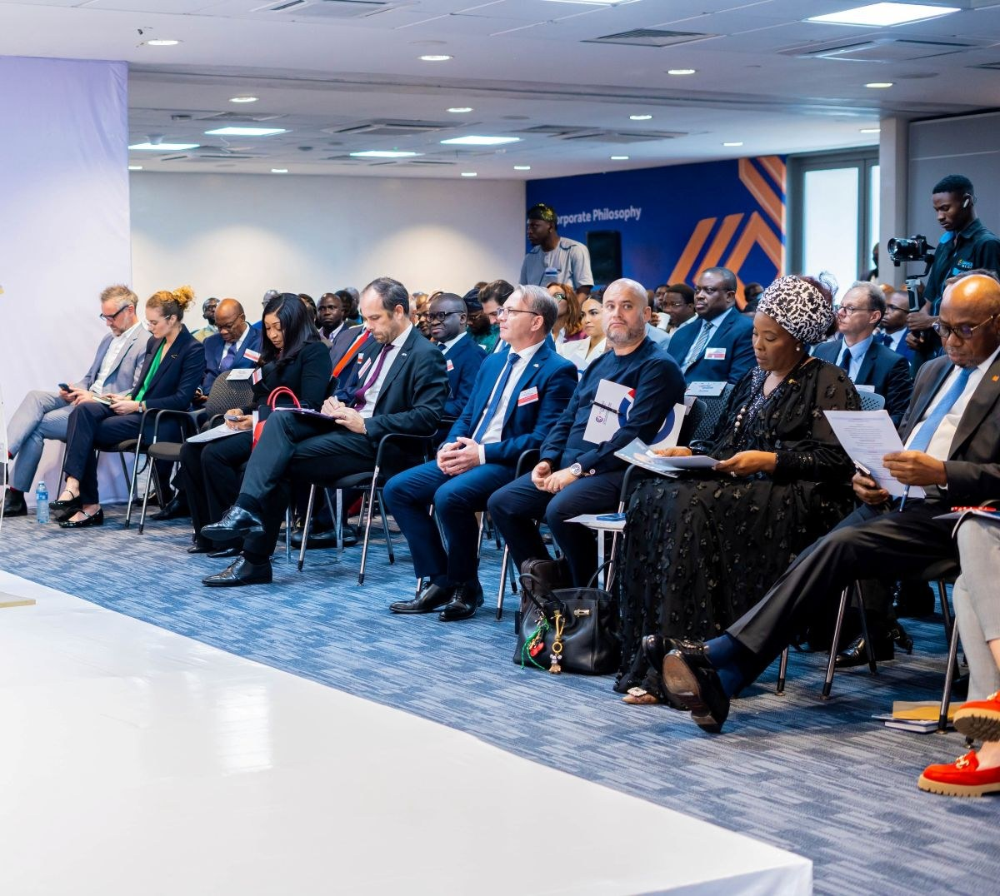

The 2026 french week celebration: showcasing the dynamic economic and commercial partnership between france and nigeria.

## French Week 2026 to spotlight France-Nigeria commercial ties
France and Nigeria are seeking to turn expanding economic relations into new business partnerships, with French Week 2026 set to take place in Lagos from October 30 to November 6. Franco-Nigerian Chamber of Commerce and Industry President Guillaume Niarfeix said the week-long program would focus on converting dialogue between businesses into concrete cooperation. The event is described as Nigeria’s largest C-level business networking gathering.
Bilateral trade reached $4.7 billion in 2025, and French foreign direct investment stock in Nigeria stood at €8.1 billion. More than 100 French companies operate in Nigeria across sectors including energy, agriculture, pharmaceuticals, insurance, logistics, infrastructure and hospitality, generating more than 14,000 direct local jobs. Companies named as continuing to invest and expand include TotalEnergies, CMA-CGM, SPIE, Schneider Electric and Danone. Carrefour, Accor and Canal+ have also been expanding their commercial presence, with Canal+ pursuing an acquisition strategy involving MultiChoice.
Infrastructure and energy projects feature prominently in the business ties. Niarfeix cited TotalEnergies’ 2024 final investment decision with NNPC on the Ubeta gas field, intended to supply Nigeria LNG Train 7, as well as the IMA project. The Omi Eko water-transport project, supported by France through AFD alongside the European Union and European Investment Bank, is planned to provide 75 electric ferries, upgrade 25 terminals and serve 15 routes across 140 kilometres of Lagos waterways. At Lekki Deep Sea Port, CMA-CGM has agreed to operate the container terminal, which has a stated annual capacity of 2.5 million TEUs. Agreements advanced in Paris in September 2026 also included partnerships for the Gateway Deep Sea Port and Ogun State Blue Marine Special Economic Zone.
Cooperation is also growing in agriculture and technology. The recently formed Franco-Nigerian Agri-Business Club aims to support investment in local capacity, mechanisation, processing and efforts to reduce post-harvest losses. Nigerian firms and institutions are also building links in France: Access Bank opened a French Desk in Paris, while JR Farms and Babafood have established operations there. The Franco-Nigerian Chamber, founded in 1985, has extended its work beyond Lagos through a Paris leadership training program and business mission. Alongside the Chamber, Team France institutions support cooperation in trade, investment, education, culture, innovation and sustainable development.
Source: Nairametrics